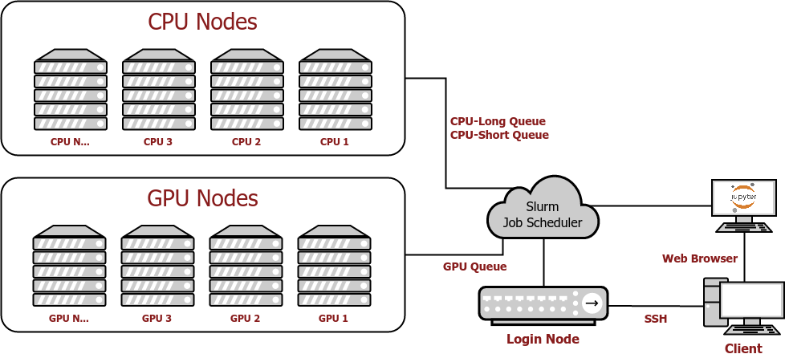

Introduction to Unity
Welcome to Unity! The Unity cluster is a collaborative, multi-institutional high-performance computing cluster located at the Massachusetts Green High Performance Computing Center (MGHPCC). The cluster is under active development and supports primarily research activities. Partnering institutions today include UMass Amherst, UMass Dartmouth, and University of Rhode Island.
1. Accessing Unity
For Faculty/PI: If you are a Faculty member or Principal Investigator (PI), please create an account on the Unity main page. Use your campus NetID and password to sign up for a Unity account. Once your account is created, go to Account Settings and request PI status by clicking the "Request PI account" button. Once your account is approved you will be able to approve adding additional users to your PI group in the “My Users” button on the side menu. Adding users will grant them access to your PI /work directory. Users in your group need to request access to join your PI group. You cannot create accounts for your users.
For Students: In order to use Unity you must be working with a faculty/PI and they must grant you access to their PI group.
Create an account on the Unity main page. Use your normal campus ID and password to sign up for a Unity account. Use your campus NetID and password to sign up for a Unity account. Once your account is created you will need to assign a PI to it. To do this, go to "My PIs" using the left side menu and click the large "+" button. You can search for your PI by name. Once found, click on “Send Request”. After your PI approves your request, you will have access to Unity and your PI’s project code and data stored in Unity.
Note: If you are a student, do not request a PI account. This will slow the process down. You should assign a PI to your account by clicking the "+" button. Your PI will then be able to approve your account.
Something not working for you? Send an email to hpc@umass.edu with as much detail as you can provide to open a support ticket. Need additional help? We offer office hours every week on Tuesdays 2-4 PM on Zoom. Be sure to check the cluster notes page for up-to-date information on any canceled/delayed office hours.
Need expert help using the cluster and optimizing your code? We encourage you to schedule an appointment with one of our experienced HPC facilitators. Send an email to hpc@umass.edu and request an HPC facilitator consultation.
2. Connecting to the cluster
You can connect to Unity in two ways, an SSH connection (the standard linux console), or an instance of JupyterLab:
JupyterLab is the easiest to get up and going. To work with JupyterLab, it's a good idea to get aquainted with roughly how demanding the job you're uploading is though. You just need to be familiar with how roughly how many of each resource you will need (Image below). Most of the time you will only ever need a single CPU or GPU, but if you have terabytes of data to analyze, then you should probably consider getting multiple GPUs and CPUs.
When connecting the portal, click on JupyterLab tab located at the bottom of the options list on the left side of the window. This will take you to the JupyterHub for Unity, which looks like this:

You will be asked to select what computer resources you want/need for the job you want to upload. Once you attempt to spawn your notebook and resources become available, you will be able to use JupyterLab as if it is running on your own computer.
SSH is the more traditional method of using an HPC cluster. You will connect to the login node of unity, and you will be responsible for starting your own jobs. This can be more useful than JupyterLabs for jobs that last a long time and must be left unattended, or to have much more refined control over the resources allocated for your job.
3. Requesting Resources
If you are on an SSH connection, you will have to manually request resources. Once you decide on what resources you want, you will submit that information to the scheduler, which will place you in a queue. If your resources are available immediately, your request will return right away, if not, you will be held in the queue until your requested resources become available.
Requesting resources in the cluster and all parameters allowed is discussed in more detail here.
4. Starting Job
Once the scheduler has started your job, it will run on some node in the cluster, using some resources that were defined by your parameters. It is not important what node the job runs on from the point of view of the client.
5. Ending Job
Once the job has finished, the scheduler will return whatever info you requested in your parameters.
6. How the Unity Cluster Works
Defining some Terms
When working with HPCs, it can be helpful to understand what's happening behind the scenes. This tutorial will go over what an HPC is. A High Performance Computer--HPC-- is super computer that is made up of many powerful computers that are called Clusters. A Cluster is made up of powerful computer parts that are connected to each other over a local network--this is akin to the motherboard on your local desktop/laptop. But for the purposes of this tutorial, it suffices to think of a Cluster as powerful computer, structurally similar to your personal desktop/laptop at home, just a lot more powerful.
Think about your personal laptop/desktop. When you use your computer, the computer's Operating System (OS) decides what resources (cpu, ram, etc.) should be used, based on what you are doing at that time. For example, if you were to open the computer's calculator punch in some numbers and multiply them, the computer's OS would determine how much of the computer's CPU should be used to perform the calculation, and how much of the computer's graphics card to use in rendering the Graphical Interface of the calculator. In some cases, the rendering of the Graphical Interface and calculations could both be performed on the just the graphics card, or the CPU.
Keeping with this idea of your OS dictating the distribution of computer resources, let's examine how a Cluser distributes its resources for an uploaded job; a job is any operation or task you run on the cluster. When a job is loaded onto the Unity cluster, what is known as a scheduler determines what Cluster resources to give you, just like your personal computer's OS system would. You can picture the cluster as a scaled-up version of a single personal computer. Making up the cluster are Nodes. A Node is the part of the cluster that jobs get run on, like a GPU or CPU. When working with Clusters, it's easier to call these computer parts Nodes because sometimes just one of these computer parts is sufficient to run a job.
In summary:
-
High Performance Computers (HPC): Super Computers made up of many Clusters that are interconnected over a local (within the same building) network.
-
Cluster: Clusters are the computers that make up High Performace Computers (HPC). They themselves are computers, and can be thought of like your desktop/laptop at home.
-
Scheduler: Linux based distributer of resources. If you request 2 CPUs, and 2 GPUs, the Scheduler is what will make those resources available for you. This is akin to your computer's OS in that it assigns parts (Nodes) of the computer to you in order for those Nodes to run your software. The Scheduler for the Unity Cluster is called Slurm. Slurm sits on the Unity Cluster, and distributes the resources of the Unity Cluster accordingly.
-
Nodes: Using the laptop/desktop comparison, a Node is akin to an individual part of the desktop/laptop, like the CPU or GPU where computations & programs are run.
-
A Job: When something is uploaded onto the Cluster and used to run an operation, or when Cluster resources are utilized to run a program, this use of the Cluster's resources is called a Job.
How Unity Works
Here is a general step by step process that governs how the Unity Cluster works:

- The client connects to Unity using SSH, or the Jupyter Lab. (Bottom right of image)
- When you log into the Unity Cluster, you can interact with the Cluster either using Jupyter Lab, or Terminal.
- If you are not comfortable working with a Linux SSH terminal interface, it is recommended that you use Jupyter Lab.
- Once connected, a job is requested through the scheduler, and the scheduler adds your requests to each necessary que.
- 'Necessary' because if the job requested requires 2 GPUs and 1 CPU then you need 2 positions in the GPU que and 1 position in the CPU que. This means that the wait time to get your required resources could be longer, but this doesn't mean the runtime of your job will also be longer.
- Once resources are available (cores, gpu, memory, etc.), the scheduler starts your job.
- Once your job completes, the result returns to the client.